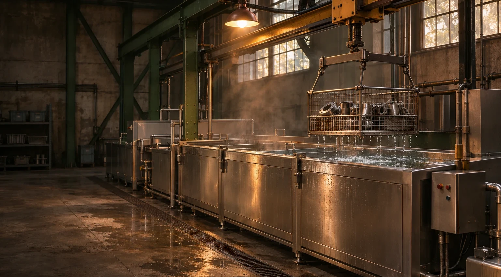

CASE / 02 · Cast housing
The recess in the casting.
Incoming residuePolishing residue
Casting pockets can retain residue and liquid. Review fixture position, drainage and the inspection before assembly.
Explore this studyFour illustrative workpieces, four residues. Follow the questions that connect the part to a proposed cleaning route.
A drilled manifold can hold cutting fluid and loose debris in intersecting passages. Decide how to reach, drain and inspect those features before a representative trial.
Casting pockets can retain residue and liquid. Review fixture position, drainage and the inspection before assembly.
Explore this studyRecord the ink, coating and cell geometry. Agree how to assess residue while respecting the roller surface.
Explore this studyContact faces and basket spacing change access. Review the batch arrangement and the condition needed after cleaning.
Explore this studyThese project studies explain planning questions; they are not customer projects or measured cleaning results.
Record the geometry and residue, then connect loading, cleaning, rinsing and inspection in one discussion. A trial helps define what belongs in the equipment brief.
Explore the process studyPlanning sequence / illustrative, subject to engineering review
Mark blind passages, contact faces and the position in which the workpiece will drain.
Review the material, residue and limits on chemistry or handling before agreeing a trial route.
Consider retained liquid, carryover and the condition required by the next operation.
Agree the inspection method, comparison record and who reviews the trial.
Use the family as a starting point. Tank size, handling, process settings and acceptance checks are defined for the project.
One process station for a defined cleaning task, with the following handling or rinse step considered alongside it.
Review firstWorking envelope · loaded basket
View this familySeparate cleaning and rinse stages, with drying considered when the next operation requires it.
Review firstStage sequence · drainage
View this familyPlan the lifting and transfer of heavy, awkward or wet batches around operator access.
Review firstBasket weight · transfer clearance
View this familyCoordinate repeated basket movement with upstream and downstream production.
Review firstLine interfaces · changeover
View this familyManifolds, drilled passages and coolant films.
View applicationCast housings, polishing residue and drainage.
View applicationEngraved rollers, dried ink and surface constraints.
View applicationRing batches, machining oil and contact faces.
View application
Use a representative part in its normal incoming condition. Put the workpiece, production context and acceptance question in the same brief.
Photographs with a scale reference, material and finish, and the residue before cleaning.
Batch dimensions and weight, loading method, available space and the next operation.
Mark the inspection areas and discuss how the same features will be checked after the trial.
Planning documents for early discussions; not released equipment specifications.
Access, orientation and an inspection plan for passages you cannot see.
Start with the next manufacturing step, then follow the basket and the liquid.
Share useful first details while the final specification is still open.
Material, residue, batch and the next operation: start with what you know.